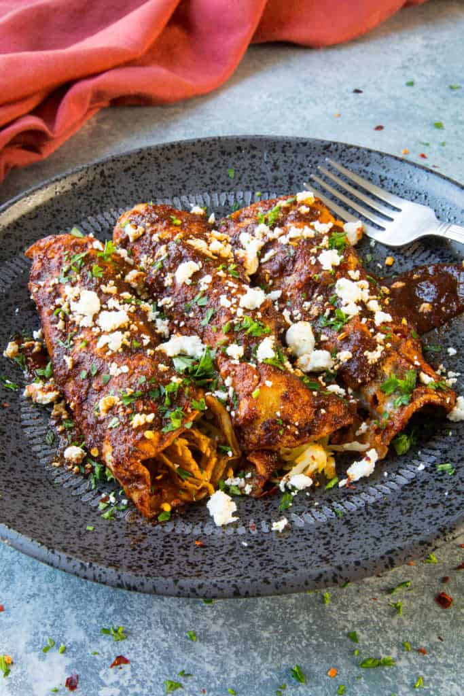

Chicken Enchiladas Rojas Recipe
Sourced from here.
This authentic chicken enchiladas recipe is made with juicy shredded chicken wrapped in corn tortillas, lots of cheese, and smothered in a hugely flavorful homemade red enchilada sauce, topped with crumbled cheese. This is the best I've ever had.

Chicken Enchiladas Ingredients
FOR THE RED SAUCE
- 4 dried ancho peppers, stemmed and seeded
- 4 dried guajillo peppers, stemmed and seeded
- 4 dried chiles de arbol, stemmed and seeded
- 1 teaspoon olive oil
- 1 small onion chopped
- 4 cloves garlic chopped
- 2 teaspoons coarse sea salt (or use salt and pepper to taste)
- Water as needed
FOR THE ENCHILADAS
- 4 tablespoons olive oil
- 2 cups cooked shredded chicken
- 2 cups shredded Mexican Manchego cheese, or use any good melty cheese like cheddar, pepperjack, Monterrey jack
- 12 corn tortillas
SERVING
- Crumbly queso fresco
- fresh chopped cilantro
- spicy chili flakes
- crema or sour cream (if desired)
How To Make Chicken Enchiladas Rojas
FOR THE ENCHILADA SUACE
- Toast the Peppers. First, heat a large pan to medium heat and dry toast the dried chili peppers a few minutes per side, until the skins begin to puff up a bit. This is an important step, as it helps to release the oils in the skins, which is HUGE for flavor.
- Soak the Peppers. Set the peppers into a large bowl and pour hot water over them, just enough to cover them. Let them soak for 20 minutes, or until they become very soft.

- Food Processor. Remove the softened peppers and set them into a food processor or blender.
- Next, pour in some of the soaking liquid. You'll notice that it has become quite dark from the peppers. This water has plenty of nutrients leached from the peppers, so I like to use it. You can also use clean water if you'd like. Add about 1 cup to start.
- Onion and Garlic. Next, cook down some onion and garlic in a pan with oil, then add them to the food processor along with the rehydrated peppers. Add sea salt to your preference.
- Process Until Smooth. Process the mixture until the sauce becomes very smooth. It will be very thick at this point. Add in more water, a half cup at a time, until you achieve your desired consistency.
Gorgeous, isn't it? So rich and vibrantly red.
FOR THE CHICKEN ENCHILADAS
- The Chicken. Get your shredded cooked chicken ready. I like to mix it with some of the finished red enchilada sauce for additional flavor. YUM!
- The Sauce. Strain the sauce into a pan with 2 tablespoons olive oil. Heat until it just starts to boil, then reduce the heat to a simmer.
- The Tortillas. Next, heat a separate pan to medium heat and add a bit of the remaining olive oil. Cook the tortillas a few seconds in the oil until they become pliable. You may need to keep adding a bit more oil as you go along.
- Dip the Tortillas and Assemble the Chicken Enchiladas. Dip each tortilla into the warmed enchilada sauce, then set it onto a work surface. Fill each with seasoned shredded chicken mixture and shredded cheese. Roll the tortillas up and serve them onto plates. Top them with remaining sauce, if desired.
- Garnish and Serve. Garnish with crumbly cheese, fresh herbs and spicy red chili flakes.
BOOM! Done! Chow down, my friends! It doesn't get any better than this.